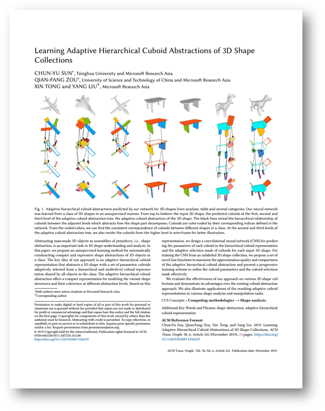

Abstracting man-made 3D objects as assemblies of primitives, i.e., shape abstraction, is an important task in 3D shape understanding and analysis. In this paper, we propose an unsupervised learning method for automatically constructing compact and expressive shape abstractions of 3D objects in a class. The key idea of our approach is an adaptive hierarchical cuboid representation that abstracts a 3D shape with a set of parametric cuboids adaptively selected from a hierarchical and multi-level cuboid representation shared by all objects in the class. The adaptive hierarchical cuboid abstraction offers a compact representation for modeling the variant shape structures and their coherence at different abstraction levels. Based on this representation, we design a convolutional neural network (CNN) for predicting the parameters of each cuboid in the hierarchical cuboid representation and the adaptive selection mask of cuboids for each input 3D shape. For training the CNN from an unlabeled 3D shape collection, we propose a set of novel loss functions to maximize the approximation quality and compactness of the adaptive hierarchical cuboid abstraction and present a progressive training scheme to refine the cuboid parameters and the cuboid selection mask effectively.
We evaluate the effectiveness of our approach on various 3D shape collections and demonstrate its advantages over the existing cuboid abstraction approach. We also illustrate applications of the resulting adaptive cuboid representations in various shape analysis and manipulation tasks.
|

|
Paper [PDF]
Appendix [PDF]
Slides [PPTX]
Code [Github]
Citation [BibTeX]
Chun-Yu Sun, Qian-Fang Zou, Xin Tong, and Yang Liu. 2019. Learning
Adaptive Hierarchical Cuboid Abstractions of 3D Shape Collections. ACM
Trans. Graph. 38, 6, Article 241 (2019), 13 pages.
|